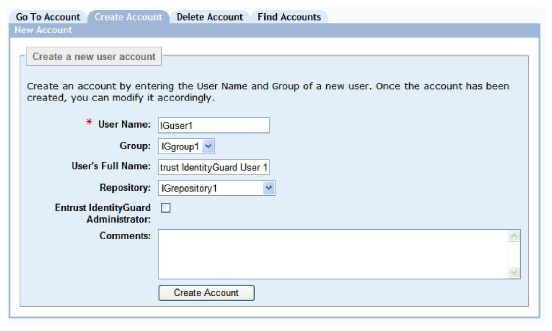
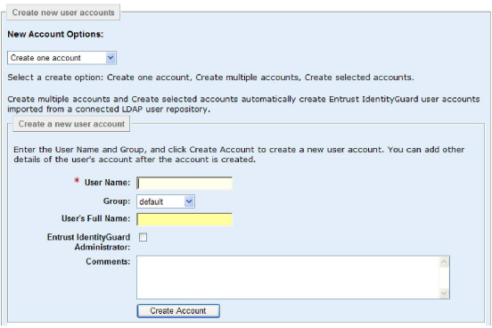

|
IdentityGuard Server 13.0 Administration Guide |
|
IdentityGuard Server 13.0 Administration Guide |
You can create users in Entrust IdentityGuard using the Administration interface, either individually or in batches (bulk operations).
You can also use one of the following features to enroll users that exist in an LDAP repository:
● Create users through LDAP synchronization with a database
● Create users by adding IdentityGuard data to your LDAP repository
If you have configured LDAP enrollment, you can still create users manually as described in the following procedure.
The Administration interface windows used for creating users are different when user enrollment is configured. The following procedure shows examples of both variations.
Note: This procedure describes how to create an ordinary user, not an administrator. To create an administrator, see Create an administrator.
1. Log in to the Entrust IdentityGuard Administration interface as the administrator.
 On the
Windows computer where Entrust IdentityGuard is installed
On the
Windows computer where Entrust IdentityGuard is installed
2. In the main menu, click User Accounts.
The User Accounts page appears.
3. Click the Create Account tab.

If Entrust IdentityGuard has user enrollment enabled, the following page appears instead. Select Create one account.

4. In the User Name field, enter the user name of the user.
Consider the following guidelines when creating user names:
● Entrust IdentityGuard user names are case-insensitive.
● A user name must contain at least one character and can contain any Unicode characters, as long as the repository has been properly configured to accept these characters.
● Spaces before or after a user name are removed by Entrust IdentityGuard.
● The entire user ID (group and user name) can have a maximum of 255 characters.
● The user name must be unique within the assigned group.
Attention: If you are using an LDAP repository, the Entrust IdentityGuard user you create must already exist as an entry in the repository and the user ID must be unique within the searchbase as well as within the group.
5. In the Group drop-down list, select a group to create the user in.
6. If the group you select is associated with more than one repository, the Repository list appears. Select the repository in which to store the user’s information or select the First Usable Repository option. (For more information about this option, see Setting repository order.)
7. (Optional) In the User’s Full Name field, enter the user’s full name.
8. Click Create Account.
Note: If you
are using an LDAP repository and you have Entrust IdentityGuard configured
to look up user status directly from the LDAP repository, user creation
may fail if the user is disabled or expired.
See Suspending
disabled and expired LDAP users and To
configure repository data policies for more information.
The View Account page for the new user appears.
After you create the user account, you can complete the following tasks (provided you have the correct permissions):
● update and modify various user and account information
● create and assign cards, temporary PINs, and one-time passwords (OTP)
● assign tokens and certificates
For more information about completing these tasks, see Managing users.
Troubleshooting
If your create users operation fails, it could be due to one of the following reasons:
● There are no more licenses available.
● There are no more user numbers available in the partition. If this is the cause, use the partition set command in the Master user shell to add more users the partition. See the Entrust IdentityGuard Master User Shell Reference for command syntax.